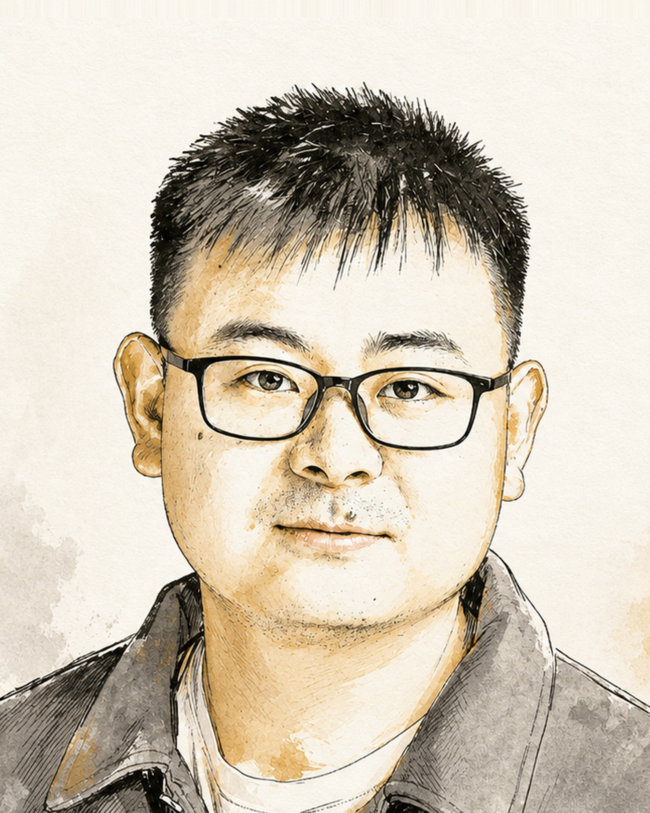

Education
Bringing and educating the next generation of financial AI researchers and talents through courses, study groups, and hands-on learning.
A global academy advancing Financial General Intelligence
A strong community of researchers, engineers, and financial experts is the driving force behind bridging AI and finance.
Join the CommunityBringing and educating the next generation of financial AI researchers and talents through courses, study groups, and hands-on learning.
Driving rigorous and transparent research with open benchmarks, models, and agent systems that advance the science of financial AI.
Publications & talks →Transforming ideas into impactful financial AI solutions by supporting early-stage teams with guidance, resources, and real-world use cases.
Leadership
Officers

See all leadership — Board, Steering & Executive committees →
Working Groups
Open financial LLMs — training, reasoning, and alignment.
Lead · Lingfei Qian
The first open-source financial LLM, with instruction data and a holistic benchmark.
The first open-source multimodal financial LLM family, continually pretrained on large-scale financial corpora.
Transferring reasoning-enhanced LLMs to finance with financial chain-of-thought training.
Agentic systems for trading, decision-making, and long-horizon financial workflows.
Lead · Yupeng Cao, Haohang Li
The first skilled benchmark for agentic financial intelligence, spanning Trading, Hedging, Market Insights, and Auditing.
A synthesized LLM multi-agent system with conceptual verbal reinforcement for financial decisions.
A live multi-market trading arena for evaluating LLM agents against real markets.
Cross-lingual, low-resource-market, and multimodal financial understanding.
Lead · Xueqing Peng
The first multilingual, multimodal, difficulty-aware benchmark for financial LLMs.
The first Greek financial evaluation benchmark for large language models.
The first bilingual Spanish–English benchmark for financial LLMs.
Detecting financial misinformation, verifying claims, and building trustworthy AI.
Lead · Zhiwei Liu
A benchmark for reference-free counterfactual financial misinformation detection.
Benchmarking scenario-induced bias in multilingual financial misinformation detection.
The first open-source LLM built for financial misinformation detection.
Retrieval and structured extraction from financial documents — tagging, auditing, recommendation.
Lead · Yan Wang
The first full-scope, LLM-ready benchmark for extracting and structuring financial information (XBRL tagging).
The first taxonomy-structured multi-document benchmark for evaluating LLMs on auditing.
A conversational, longitudinal benchmark for utility-grounded financial recommendation.
A strong community of researchers, engineers, and financial experts is the driving force behind bridging AI and finance.
Join the Community